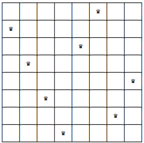
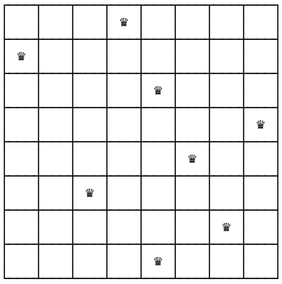

class: center, middle, title-slide # CSCI-UA 102 ## Data Structures <br> ## Recursion .author[ Instructor: Joanna Klukowska <br><br><br> ] .license[ Copyright 2020 Joanna Klukowska. Unless noted otherwise all content is released under a <br> [Creative Commons Attribution-ShareAlike 4.0 International License](https://creativecommons.org/licenses/by-sa/4.0/).<br> Background image by Stewart Weiss<br>] --- layout:true template: default name: section class: inverse, middle, center --- layout:true template: default name: breakout class: breakout, middle --- layout:true template:default name:slide class: slide .bottom-left[© Joanna Klukowska. CC-BY-SA.] --- template: section ## Generating Sequences --- ## Generate All Sequences ... In some situations we want to be able to produce all possible sequences of some set of characters. -- .right-column2-small[ <a title="Valentijn Sessink, CC0, via Wikimedia Commons" href="https://commons.wikimedia.org/wiki/File:Scrabble-letters-modern-nederlands.jpg"> <img width="170" alt="Scrabble-letters-modern-nederlands" src="https://upload.wikimedia.org/wikipedia/commons/thumb/3/34/Scrabble-letters-modern-nederlands.jpg/128px-Scrabble-letters-modern-nederlands.jpg"></a> ] __Example__ Imagine you are implementing a program that is a _Scrabble Helper_. The player has a particular set of letters and your program is supposed to come up with all seven letter words that can be created from those letters. An algorithm: - create all possible sequences of the letters - check each sequence in an approved dictionary (throw out the ones that are not there) (This is a very slow algorithm, but ... ) -- ----- We'll start with slightly easier examples: - generate all sequences of two characters: '0' and '1' (or all binary sequences) of a particular length - generate all sequences of ten characters: '0', '1', ..., '9' (or all decimal sequences) of a particular length - generate all binary sequences that do not end in a zero - generate all binary sequences that do not have a 1 in a third position - generate all binary sequences that have fewer than 5 ones - generate ... --- ## Generate All Binary Sequence of Length `n` If `n=3`, all binary sequences of length `3` are `000`, `001`, `010`, `011`, `100`, `101`, `110`, `111`. There are eight of them because we have three positions to fill and two options for each position, so $2^3 = 8$. - Decide what the base case could be (there may be different ones that will work) - Decide what the recursive case could be. - Put together an algorithm that accomplishes the task. --- exclude:false ## Generate All Binary Sequence of Length `n` __Idea__ generate each sequence starting from zero length and adding either `0` or `1`. The recursive calls need to _grow_ the sequence until we reach the desired length (base case). -- __base case__ `len(sequence) == n` -- __recursive case__ - add 0 to the current sequence: `sequence + '0'` - add 1 to the current sequence: `sequence + '1'` -- __algorithm__ _input_: `sequence=""` is the initial sequence, `n` is the desired length ``` getAllBinarySequences ( n ) getAllBinarySequences ( n, seq = "") getAllBinarySequences ( n, seq ) if len(seq) = n we have one of the sequences return sequence0 = sequence + '0' sequence1 = sequence + '1' generateAllBinarySequences( n, seq0) generateAllBinarySequences( n, seq1) ``` --- ## Generate All Binary Sequence of Length `n` Finally, we can convert the algorithm into Java code. For simplicity, we print the sequence once it is ready. We could also add it to a list of some kind for later usage. ```Java void getAllBinarySequences ( int length ) { getAllBinarySequencse(length, ""); } void getAllBinarySequences ( int length, String seq ) { if (seq.length() == length ) {//reached the desired length System.out.printf("%s %n", seq.toString() ); return; } /add the next bits to the sequence (two possibilities) String seq0 = seq + "0"; //add zero to the current sequence String seq1 = seq + "1"; //replace the zero with one getAllBinarySequences( length, seq1); getAllBinarySequences( length, seq0); } ``` --- exclude:false name:no-0-in-second ## No `'0'` in the Second Position A slight variation of this problem is to generate all sequences except the ones that meet some condition. For example: exclude sequences that have a zero in the second position (zero-based indexing). -- We can generate all sequences as before and then skip the ones that we do not want. -- __algorithm__ _input_: `sequence=""` is the initial sequence, `n` is the desired length ``` getAllBinarySequences ( n ) getAllBinarySequences ( n, seq = "") getAllBinarySequences ( n, seq ) if len(seq) = n * if (seq[2] != '0' ) * we have one of the sequences return sequence0 = sequence + '0' sequence1 = sequence + '1' generateAllBinarySequences( n, seq0) generateAllBinarySequences( n, seq1) ``` -- <br/> .center80[ .red[ But this means that we are creating many more sequences than we need to! <br/>It all takes time, especially for large `n`. <br/>Can we avoid generating sequences that we do not want? ] ] --- template: no-0-in-second We want to stop the algorithm from adding the zero to the second position: __better algorithm__ _input_: `n` is the desired length ``` getAllBinarySequences ( n ) getAllBinarySequences ( n, seq = "") getAllBinarySequences ( n, seq ) if len(seq) = n we have one of the sequences return * if len(sequence) != 2 * //do not add '0' if adding to the second position * sequence0 = sequence + '0' * generateAllBinarySequences( n, seq0) sequence1 = sequence + '1' generateAllBinarySequences( n, seq1) ``` -- <br/> .center80[ .red[ This way we avoid making a lot of unnecessary recursive calls. ] ] --- template:section # Eight Queens Problem -- .left-column2[  ] -- .right-column2[  ] --- # Eight Queens Problem The eight queen problem is a chess related problem of how to place eight queens on a chess board so that all of them are _safe_ - not under attack by another queen on the board. -- This requires you to know something about the queen and her powers in chess: - queen attacks every position in its own column - queen attacks every position in its own row - queen attacks every position on its two diagonals --- ## Generating Eight Queens Board First approach of solving the problem is as follows - Place the first queen anywhere in the top row. - Then find a position in the second row that is not under attack and put your second queen there. - Then find a position in the third row that is not under attack and put your third queen there. - ... - Then find a position in the eighth row that is not under attack and put your eighth queen there. -- .red[.center80[ PROBLEM <br>There is a major problem with this approach: we may not be able to find any space in a given row that is not under attack (and unless we can place one queen in each row, we cannot place all the queens since the chess board is eight by eight). ]] --- ## Generating Eight Queens Board So how can the above solution be changed to handle situation in which we get to a row where all spaces are under attack? - Whenever you get to a row in which all squares are under attack, go back to a previous row and move the queen in that row to an alternative _safe_ position. -- .red[.center80[ PROBLEM <br>This may solve some of the problem situations of the original approach, but it ignores two things: - There might not be another _safe_ square in a previous row. - Even if there are alternative squares and we move the queen there, this does not guarantee that we can find a _safe_ square in the current row. ]] -- Fortunately, the solution mentioned above can be applied multiple times, so if we find ourselves in the situation of 1 or 2 above, we go back to the row before the previous row and try to move the queen there. If that still does not work, we go back again, and so on. Eventually we might be moving the queen on the very first row. --- ## Backtracking This approach of solving problems is called __backtracking__ - we keep going as long as we can, and if we run into problems, we just go back to a previous place where we had a choice to make and pick an alternative way. -- If this seems a bit too abstract, think of going through a maze: - each time we come to a fork (with two or more options), we follow just one - if that path goes to the exit, we got lucky, - if it we get stuck, then we go back to the place when where we made the choice and pick an alternative path --- ## Eight Queens with Backtracking __algorithm__ _input_: an empty chessboard and eight queens to be placed on it ``` placeEightQueens( chessboard ) placeQueen ( chessboard, row = 0 ) placeQueen( chessboard, row ) if row is greater than 8, we have the chessboard with eight queens on it (problem is solved) return true for each column from 0 to 8 add queen to the (row,column) position if the (row, column) position is _safe_ //check if it is possible to place queens in rematining rows possible = placeQueen ( chessboard, row + 1) if possible return true (problem is solved), no need to check remaining columns in this row otherwise remove the queen from (row,column) position return false, no position in the current row is valid ``` --- ## Eight Queens with Backtracking If we implement the code according to the specification from the previous slide, it will always produce the same solution. That's because we always start checking from column 0 and advance one column at a time. An alternative solution, randomizes which columns are used in the for loop. --- template:section # Examples and Things to Think About --- ## All Decimal Sequences Design an algorithm that generates all decimal sequences (using characters '0', '1', ..., '9'). Follow the steps that we did for the binary sequences: - decide on the base case - decide on a recursive case - design an algorithm (specifying what its initial inputs are) --- ## All Sequences For Scrabble Design an algorithm for generating all sequences of characters given a set of characters (a sequence can use a particular character multiple times or not at all). <br/> HINT: this is just like a previous-slide problem, but uses characters instead of digits. __Part 2__ Do the same as above, but do not reuse characters. This limits the number of sequences that can be produced. <br> For example, given letters 'c', 'a', 't', we can create "atc", "act", "cat", "cta", "tac", "tca". __Part 3__ Do the same as above, but generate __only__ sequences that are words in a given dictionary. Try to do this efficiently, so that you do not generate sequences that _do not lead_ to a word. --- ### Eight Queens Write the code implementation for the algorithm presented in the earlier slides.